About Guruji
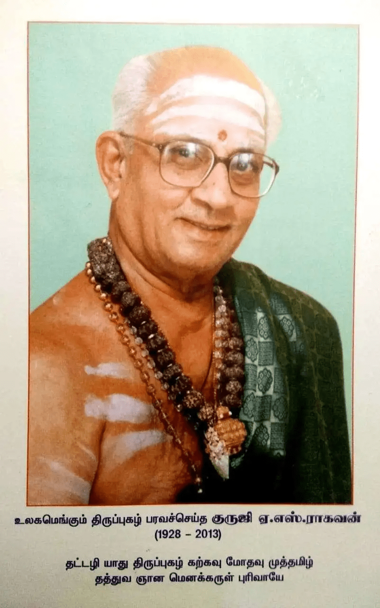
OUR GURUJI
Guruji Sri AS Raghavan was born on Sep 4,1928 in Arumugamangalam in Tirunelveli district of Tamil Nadu.His job took him to Bombay and Delhi.In 1958 in Delhi ,in response to request from a couple of friends ,he entered into the world of Thiruppugazh and then there was no turning back.It was divine will and his perseverance that he created this wonderful world of Thiruppugazh Anbargal which has benefitted thousands of people.
The satisfaction that one gets in singing Thiruppugazh, set to Carnatic ragams and complex thaalams with bhakti gave immense happiness to the common man,there seemed to be a magnetic attraction towards Guruji,the bhajan,the discipline and the bhakti
He was a man of extraordinary talent and bhakti, recognized and loved by one and all
Early in life he had the kataksham of Thirucchendur Murugan and a polio afflicted crippled child started walking overnight.
Kanchi Maha periyavaa has blessed him several times. During the Arunigirinathar stamp release function , there were several hurdles.From Kanchipuram a person came all of a sudden with prasadam and an assuring message from Maha Periyavaa that all will be well.It was sheer divine grace that the function went off without any glitches.
Sringeri Periyavas personally blessed and Guruji’s Sashtiabdapoorthy function was conducted in the Mutt.He has said
‘Raghavan is not an ordinary soul. He is a Madaathipathi.’
Jayendra saraswati swami from Kanchi mutt conferred the title of
‘Thiruppugazh Isai Chakravarthi’.
Krupananda Warriar has blessed Guruji
Ki Vaa Ja had high regards for Guruji and always mentioned his name in his speeches.
Various Swamijis like Chidananda, Dayananda Saraswati, Senthil Thuravi, Saadhuram
and several others had shown their admiration, considering him.
‘An evolved extraordinary soul’
Sri R Venkatraman,the then Vice President of India , had invited Guruji to his residence several times for his bhajans.
Srimathi DK Pattamal said
'You can become a millionare overnight if you commercialise Thiruppugazh .'
His wife and children felt, all the music and setting to ragam and thaalam happened only with divine will ,as they had never seen him practicing or singing.
There have been a large number of disciples but a handful of them followed his music pattern, and way of life and teachings to the last letter. These staunch disciples have taken the movement far and wide and in a span of 70 years, taken it the world over.
Technology and the great efforts of some have made the 505 songs , set to Ragam and thaalam,saved as recordings for the generations to come.
His method of teaching and ability to bring out the best, even in the new comers and the un initiated has attracted several.His ability to pour in the bhakthi bhaava, breaking up the words in the right places , so that the thaalam just falls in the right place effectively. Is extra ordinary .He created music of very high quality and bhakthi bhaava of the highest order. He practiced Anbu and Aviridham and expected all of us to practice it too.
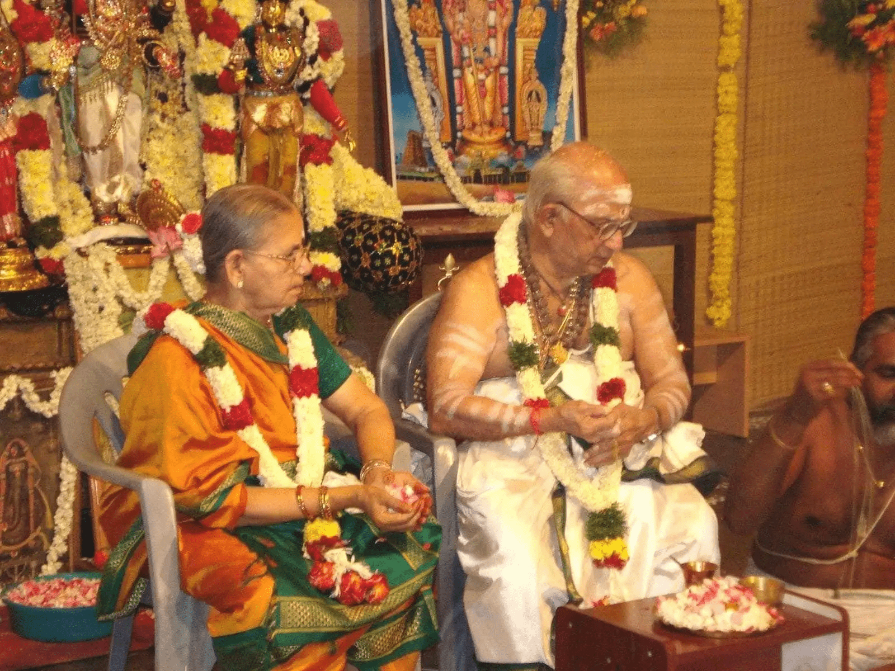

Thousands of young and old are spending their spare time usefully learning and teaching THIRUPPUGAZH without whiling away their time.
This movement has appealed to the masses – irrespective of being of Tamil, Telugu, Malayalam, Kannada or Maharashtrian origin – because of the high quality of music , devotion and bhakthi bhaava .
Today the Thiruppugazh Anbargal are seen all across the globe.To mention a few, there are over ten centres in the US,several in Canada and London,also in Dubai,Abudabi ,Malaysia and Singapore.Of course in India it has spread from Delhi to Chennai,Bombay,Bangalore,Pune,Hyderabad,Coimbatore,Trivandrum,Indore,Bhopal,Chandigarh,Calcutta and a few more places.
The recordings of the 505 songs, Anubhuti, Vel Mayil Seval Viruthams, Vaguppugal tuned and sung by him is a great boon and is being used across the globe by teachers and students to learn Thiruppugazh.
He has tuned the Abhirami Andadi and Abhirami Padikam and recorded them also.
He has done a Selection of appropriate songs from Thiruppugazh to bring out the concept of the union of the Jivatma to Paramatma which has been beautifully brought out in the Valli Kalyanam.
Guruji was a living legend and we are blessed to have lived during his time and have had close association with him.
With the advent of modern modes of communication like WA,Facebook,youtube and website ,the information,the music and the movement is spreading faster.
We now have a Thiruppugazh International WA group which has representative members from every centre in the world and all are encouraged to share their views and events in this group.This way, all are aware of the events and are able to participate as they travel.
We also have a Thiruppugazh global teachers WA group which has enrolled teachers from every centre.The teachers have a meet every month where in they are given the nuances of each song by a team of senior experts.
All attempts are being made to preserve the correct singing,thaalam,proper pronunciation and following of the paddhati set by Guruji for conducting a Thiruppugazh isai Vazhipadu.
The school children are being trained in several cities and we now have a large youth brigade.
All this will ensure that the legacy of Guruji will go on.
His other facets have been-he was a skilled Carnatic music exponent and a regular AIR artiste,participation in Hari Bhajans,playing lead roles in some Tamil dramas
We are now getting ready for Gurujis centenary celebration where we hope to include every single anbar in this world.Hoping to celebrate the same over two years with events and TIVs in several centres
Many of the direct disciples of Guruji have reached the feet of Senthil Andavan,the responsibility of carrying this movement forward lies on the present generation
Guruji attained the Lotus feet of Senthil Andavan on 17.5.2013
Thiruppugazh by Arunagirinathar and music and divinity added by our Guruji Sri A.S.Raghavan is appealing to everyone, young and old.It is therefore our responsibility to handover this Navaratna to the next generation without any changes.
🙏 குருவே சரணம் 🙏
Experiences of Sri N Subramanian & Smt Saraswati
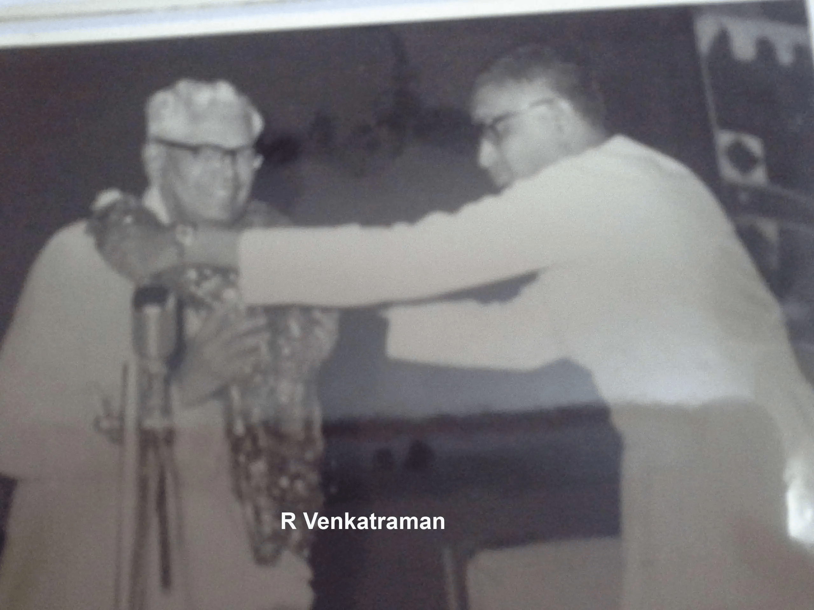
Our first association with Guruji was in 1965 when we attended a bhajan in Kaka nagar, Delhi. Before this we were not very keen on this form of devotion, being a Ramakrishna devotee where silent meditation and peaceful atmosphere is what was stressed and practiced. After attending one bhajan and seeing the way Guruji took all those present there to another world, we were mesmerized. This was our turning point.
We had the first bhajan in our house in Dec 1966 in RK Puram, Delhi. There was no looking back since then. We tried not to miss any bhajan in Delhi and took active part in organizing several functions.
Classes started later and we gradually went deeper into this movement. What appealed most was his simplicity, discipline, eye for every detail and the abject surrender to Lord Muruga.
We have seen him go through difficult times – handling them with composure. In 1983 for the sixth centenary function Guruji used to come to our residence every single day, to plan and execute all aspects of the activity.
We moved to Chennai in 1983 and had the ‘bhagyam’ of hosting Guruji on several occasions. Following Guruji’s principles and pursuing perfection has been our continued efforts since then.
We have had several well wishers in this journey which has helped expand the Thiruppugazh family. We moved to Hyderabad in 2000 and have continued our efforts to spread this movement.
Experiences Of Sri N Ramamurthi with Guruji
டெல்லி அன்பர் என் .ராமமூர்த்தி அவர்கள்சொல்லவொண்ணா தன்னுடைய நினைவலைகளை தன் கை வண்ணத்தில் முத்து முத்தாக எழுதி தற்போது அன்பர்களுடன் பகிர்ந்து கொள்கிறார்.
அதில்,குருஜி செந்திலாண்டவன் உத்திரவின் படி,உணர்த்திய படி பாடல்கள் அமைந்தது,வகுப்பு வழிபாடு அனுபவங்கள்,காரில் செல்லும் போதே பாடல்கள் அமைத்தது,பத உச்சரிப்பு,எப்படி பத அர்த்தங்களுக்கு ஏற்ப ஏற்றி இறக்கி பாடுவது,தாள நுணுக்கங்கள்,நிர்வாகத்தில் கணக்கு வழக்கு,நிதானம்,பொறுமை,சங்கீதம் அறியாத அன்பர்களை ராகங்களுடன் பாட வைத்தது.
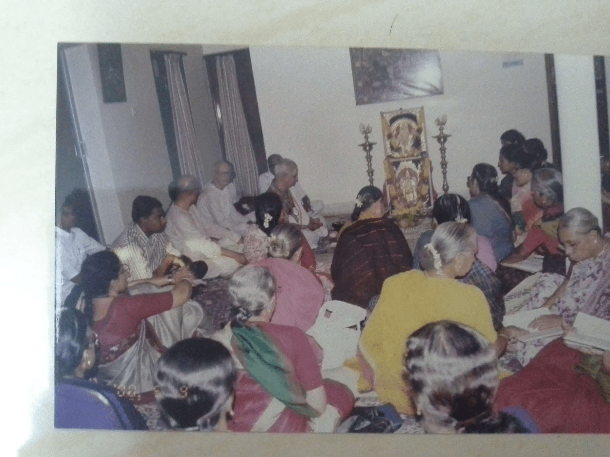
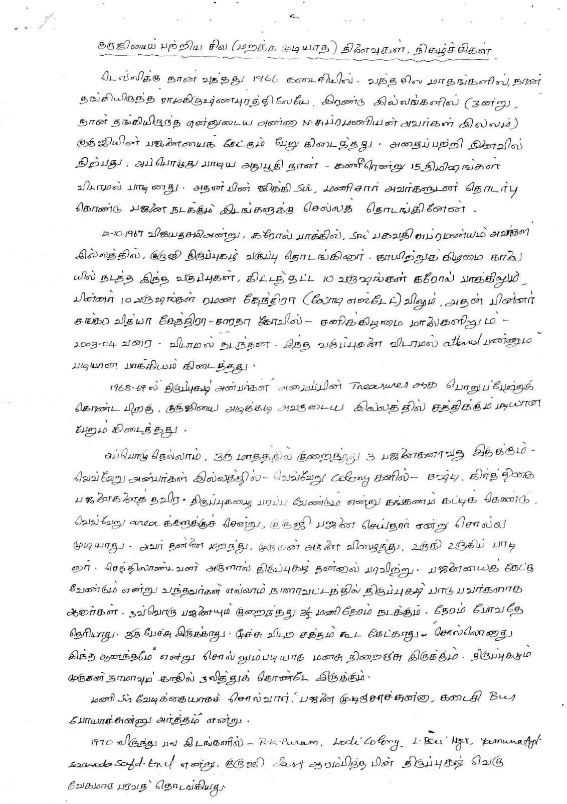
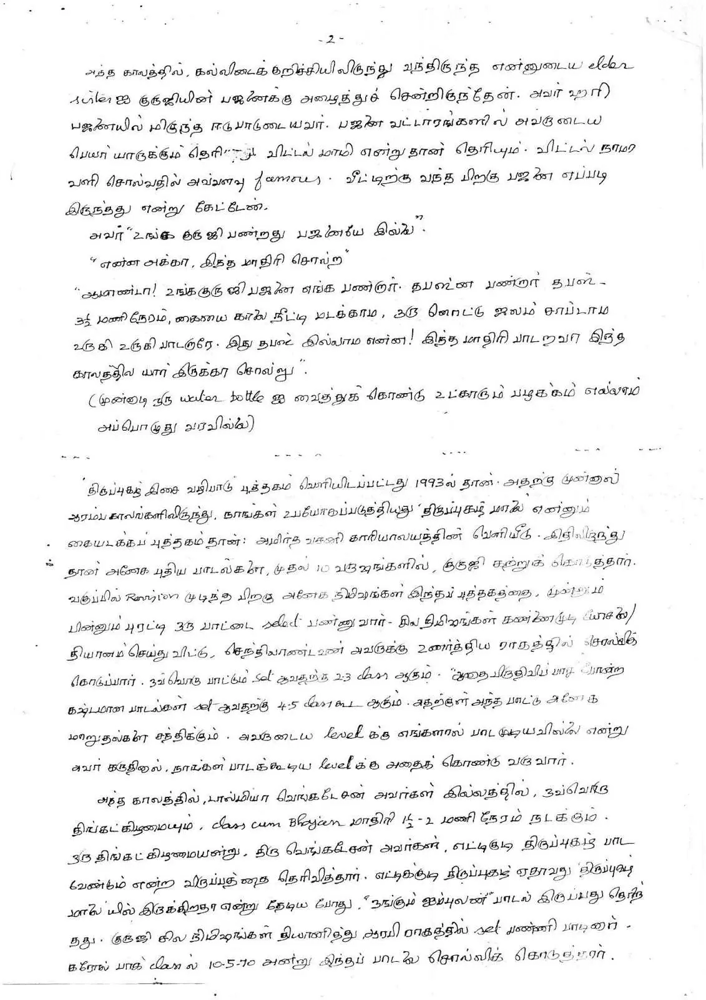
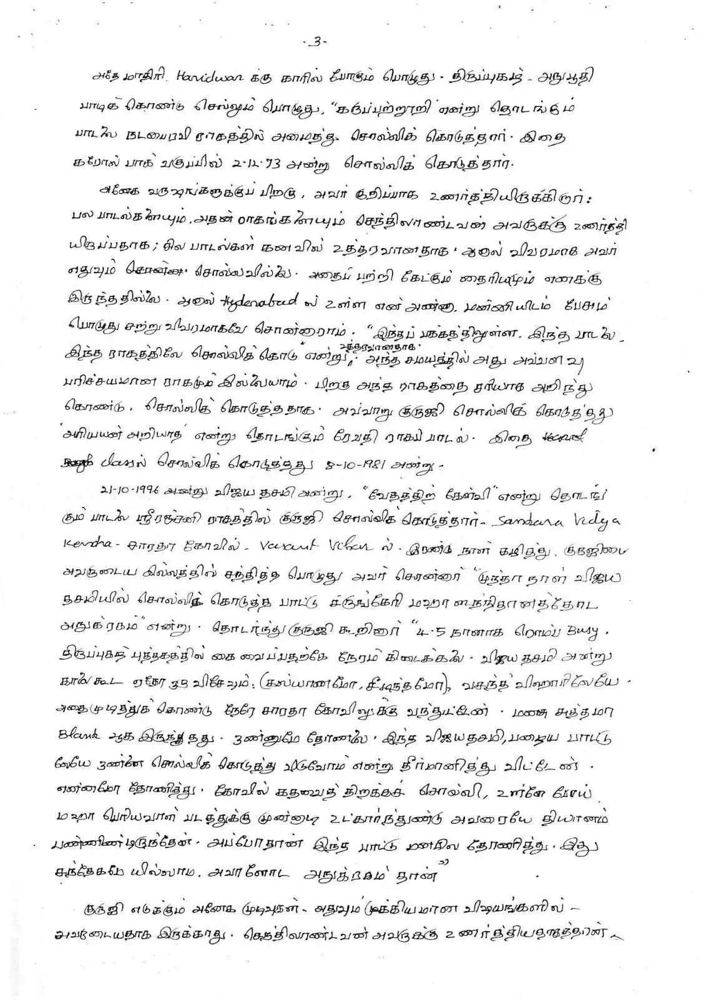
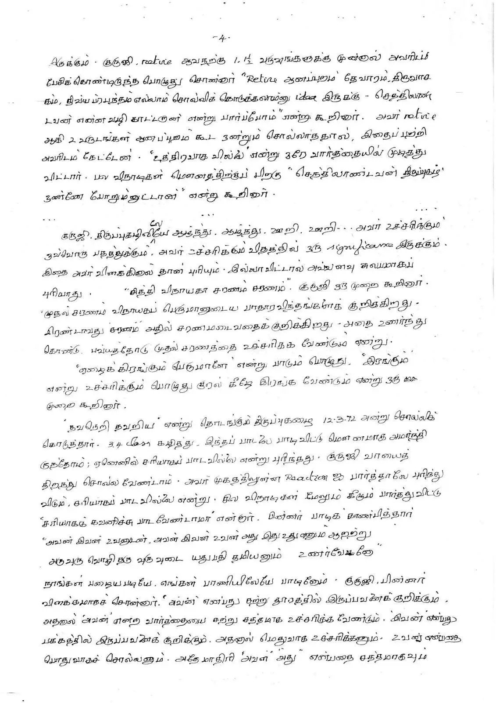
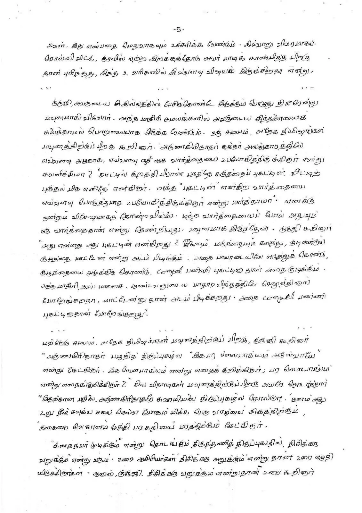
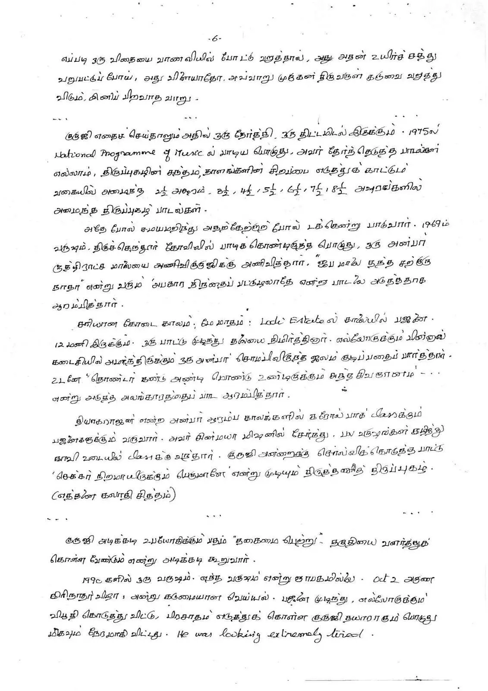
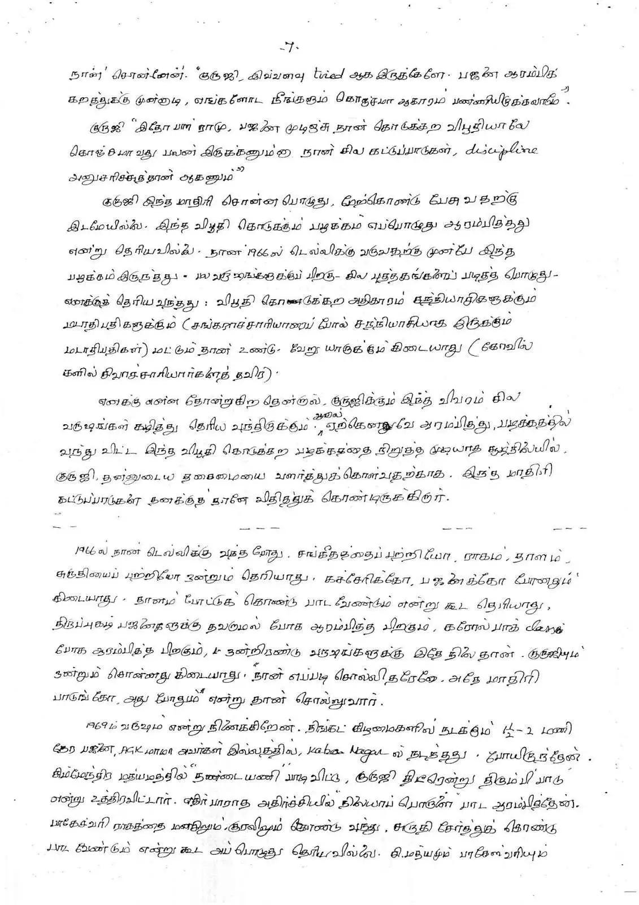
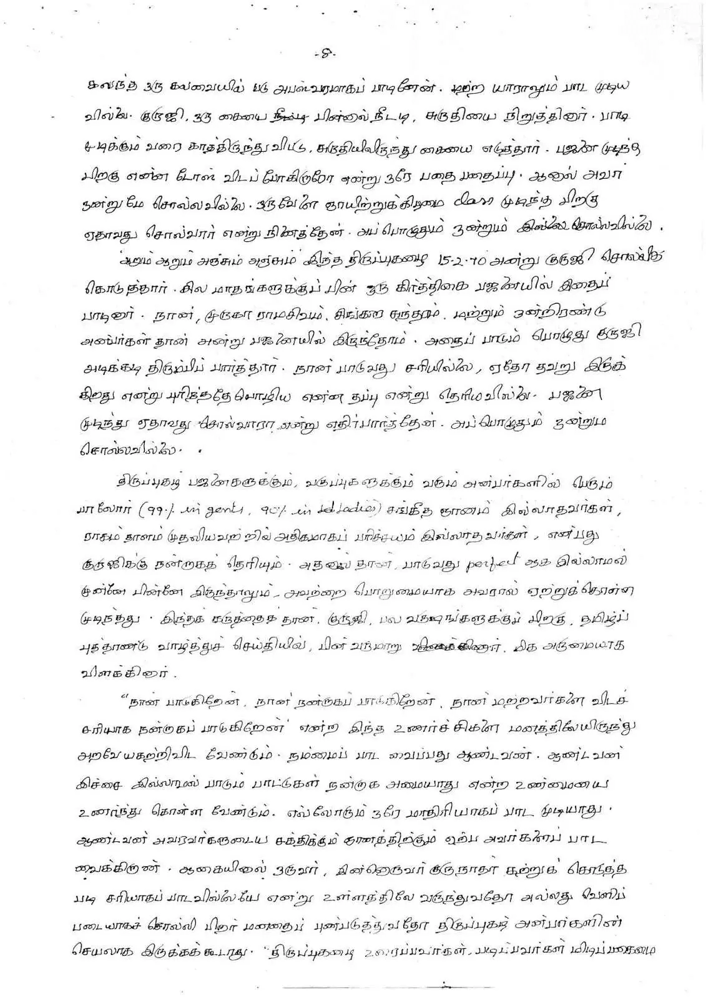
இலண்டன் சென்றோம் (ஒரு பயணக்கட்டுரை) - ஜிக்கி
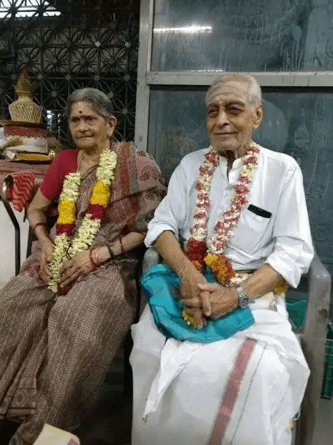
'நம் குருஜி அவர்கள் வெளிநாடுகளில் திருப்புகழைப் பரப்புவதற்கு மேற்கொண்ட முதல் வெளிநாட்டுப் பயணம் 1980ஆம் வருடம் செப்டம்பர் மாதத்தில் அவரது லண்டன் விஜயமேயாகும். அந்தப் பயணத்தின் பூரா விவரங்களும், அப்பொழுது குருஜி அவர்கள் விசேஷமாக எடுத்துக்கொண்ட முயற்சிகள், அவைகளுக்கு கிடைத்த வரவேற்பு பற்றிய விவரங்களும் குருஜியுடன் சென்ற அவரது முன்வரிசை சீடர்களில் ஒருவரான ஜி. கிருஷ்ணன்(திருப்பு கழ் அன்பர்கள் எல்லோராலும் 'ஜிக்கி' என்று அழைக்கப்படுபவர்) எழுதியுள்ளார்.
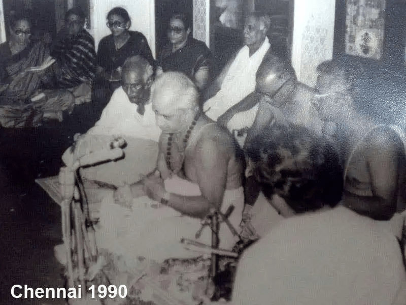
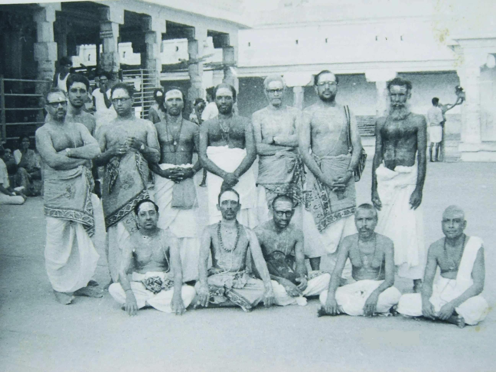
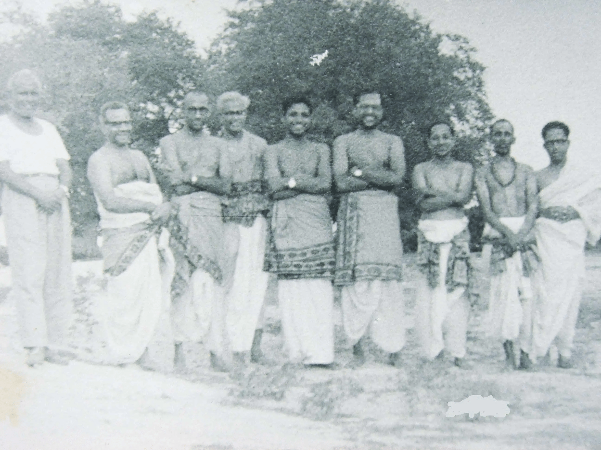